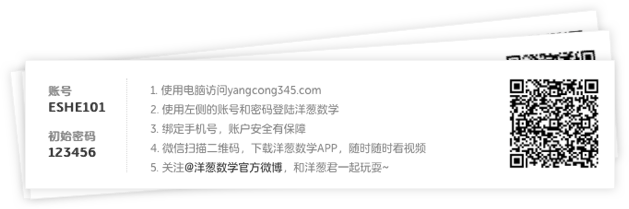
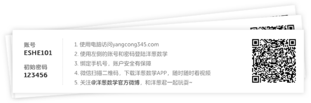
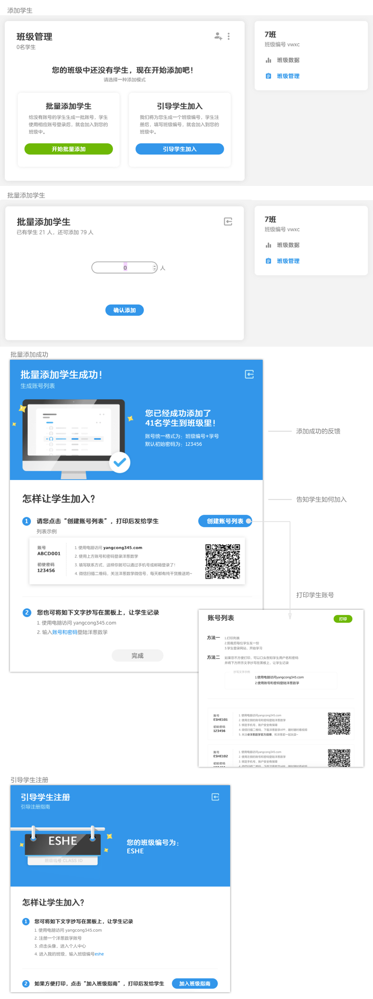

背景
教师要查看自己学生的学习数据，前提是先建立班级，并把学生添加进来。
分析问题
前期的调研发现，实际教学中，一个典型的老师通常同时教多个班级，除了实体班级可能还会有虚拟班级，日常教学已经占用大量时间精力。站在老师角度，我希望维护班级等等这些任务只占用很少精力。
因此添加学生这个任务的目标是：不增加老师负担；短时间内所有学生加进来，成功率高。
方案设计
选择添加方案

一开始我能想到若干种添加学生的方法。为了选出符合体验目标的较优解把他们放入成功率和难易度的矩阵中。有两种方法落入了目标区域：
1.老师给没有账号的学生自动生成一批账号。此法成功率最高。
2.告知学生班级编号，让学生课后自己操作加入班级。这种方法成功率不如前一种，但适合有已经注册的学生需加入班级的场景。
两种方法结合，可覆盖所有场景，保证学生都进入班级。
告知学生如何加入
分别梳理两种添加方法的流程，会发现当老师完成线上的操作后，仍需要在线下告知学生加入班级的方法。这里线上线下之间，存在信息传递的鸿沟。
 

为弥合这个gap，一种解决方法是把信息传递到物理载体上。我们帮助老师生产一份方便打印的学生账号列表，每一个账号附带上引导学生通过web或移动访问洋葱数学的方法。打印出以后，每个学生的账号可以被裁剪成小条，发放给学生。
视觉设计
